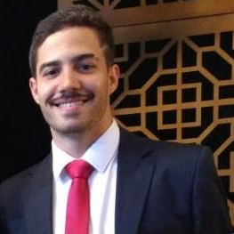

| CURRÍCULO | |
|---|---|
|  | |
| Nome: | ÉVERTON COSTA DE ARAÚJO |
| E-MAIL: | ecaraujo0204@gmail.com |
| Telefone: | (31)9 7161-5102 |
| Endereço: | Rua Santa Rita, 184 |
| Data de Nascimento: | 04/02/1997 |
| Naturalidade: | Coronel Fabriciano - MG |
Estagiar em áreas da Engenharia e Ciências da Computação, Tecnologia e Sistemas da Informação a fim de cumprir requisitos acadêmicos e adquirir experiência profissional para ingresso no mercado.
• Java (Avançado)
• C++ (Intermediário)
• JavaScript (Intermediário)
• VHDL, Erlang (Básico)
• MySQL
• LaTeX, MatLab
• Sistemas Operacionais: Linux e MicrosoftOS
• Inglês (Avançado)
• Espanhol (Intermediário)
• Francês (Básico)
Proatividade, flexibilidade, comunicação e liderança.